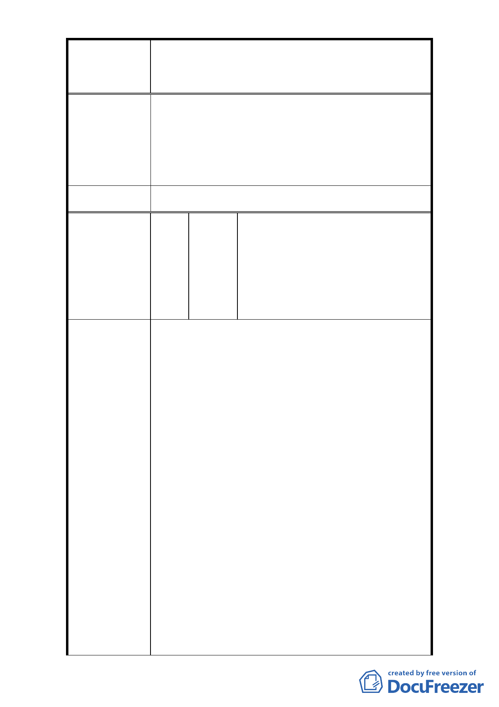

修訂臺北市大安區青田街保存區聚落風貌保存專用區細部計
案
名
畫、變更部分第三種住宅區、第三種商業區(特)為第三種住宅區
(特)(日式宿舍)及第三種商業區(特)(日式宿舍)暨劃定週邊地
區都市設計管制細部計畫案
管理人管理維護。本府文化局亦將盡主管機關督導
之責。
2. 本次修訂計畫原則上仍維持 96 年計畫之原意及計
畫區內所有之文化資產，惟針對本地區之都市設計
以及容積管控進行修改，期能兼顧文化資產保存與
居民之土地開發利益。
委 員 會 決 議 依市府回覆意見辦理。
吳端彗、許昭宏,許誠毅、余素貞、
陳宗賢、楊遠芬、李廣濟,李昭翰、
王德芸、黃聖峰、吳鴻禧,王麗華、
編 號 29 陳情人 高振和、何宗勳、楊志彬、李育欣、
陳儒瑋、江宜穎、張玉鈴、林雅惠、
呂美鸞、林邦文、羅珮菁、社區大
學全國促進會、高茹萍
1. (1)青田街的價值就在這些老樹和庭院，才能維持本
區價值越來越高的水準，地下室 100％的開挖率，會
使得本區的大樹死光光！這幾年的建築，也有在開
挖時原本保留一小截原本的樹木，但在施工中完全
沒保有它存活的土壤與環境，天天被施工機器的廢
氣與熱氣蒸騰，建物還沒完工它就死掉了，建案完
工後這個死掉的老木也順理成章的挖掉，原本翠綠
的樹木庭院變成光禿禿的水泥地。(2)住宅區中沒有
前院，直接貼著道路的建築，對於房舍價值本來就
是一個減分的條件，把青田街弄成整區建物都貼著
陳 情 理 由 窄小巷弄，讓人神經緊張的壓迫感不是現代都市規
劃應有的格局。(3)青田街的數個日式建築，如果通
通委交給開發商作商業用途，將失去青田街單純的
文教環境。若青田街變成商家林立的永康街將嚴重
影響本區居民日常生活，請讓青田街持續保持為台
北市內少數的單純住宅區環境。(4)都更是必要的，
但要保留區域原本的特色和優點，並避免過度開
發，才是永續經營的根本之道。
2. 反對都更砍老樹，不要比吳敦義還不如，吳在高雄
市長任內種樹兩億棵，臺北市呢？
- 35 -